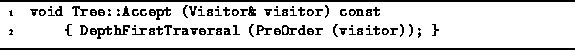

Data Structures and Algorithms
with Object-Oriented Design Patterns in C++
Data Structures and Algorithms
with Object-Oriented Design Patterns in C++The Tree class replaces the functionality provided by the single function Accept with two different kinds of traversal. Whereas the Accept function is allowed to visit the nodes of a tree in any order, the traversals visit the nodes in two different, but well-defined orders. Consequently, we have chosen to provide a default implementation of the Accept function which does a preorder traversal.
Program  shows the implementation
of the Accept member function of the Tree class.
This function uses the PreOrder adapter
to pass on a given visitor to the DepthFirstTraversal routine.
shows the implementation
of the Accept member function of the Tree class.
This function uses the PreOrder adapter
to pass on a given visitor to the DepthFirstTraversal routine.

Program: Tree Class Accept Member Function Definition
 Copyright © 1997 by Bruno R. Preiss, P.Eng. All rights reserved.
Copyright © 1997 by Bruno R. Preiss, P.Eng. All rights reserved.